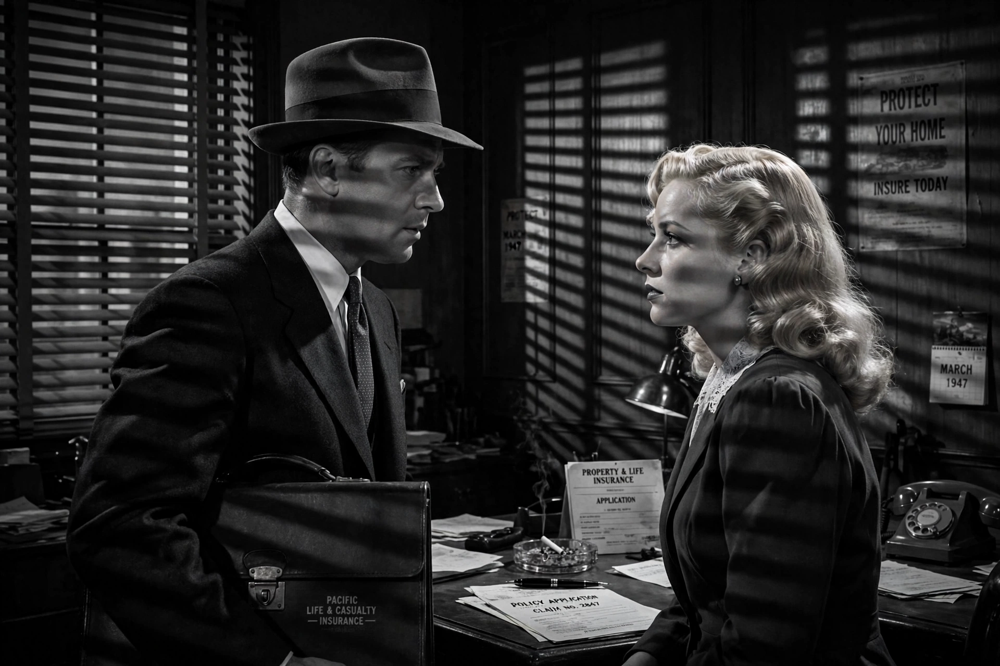

Double Indemnity
Double Indemnity is a 1944 American crime drama film noir directed by Billy Wilder, co-written by Wilder and Raymond Chandler, and based on James M. Cain's 1936 novella of the same name. It stars Fred MacMurray as insurance salesman Walter Neff, Barbara Stanwyck as the femme fatale Phyllis Dietrichson, and Edward G. Robinson as claims manager Barton Keyes. The film is widely regarded as one of the greatest films of all time and a defining work of film noir.

| Double Indemnity | |
|---|---|
| Directed by | Billy Wilder |
| Screenplay | Billy Wilder, Raymond Chandler |
| Based on | Double Indemnity (1936) by James M. Cain |
| Starring | Fred MacMurray, Barbara Stanwyck, Edward G. Robinson |
| Cinematography | John F. Seitz |
| Music | Miklós Rózsa |
| Released | 1944 (Paramount Pictures) |
Plot
Los Angeles insurance salesman Walter Neff, wounded and bleeding, dictates a confession into an office Dictaphone for his colleague Barton Keyes. In flashback, Neff recalls calling on the Dietrichson home to renew an automobile policy and meeting Phyllis Dietrichson, who proposes insuring her husband against accidental death — with a "double indemnity" clause paying twice for death in specified rare circumstances. Seduced by Phyllis, Neff plots the murder: he poses as Dietrichson on a train so the death will appear an accident, doubling the payout. Keyes, whose "little man" instinct detects fraud, closes in; the lovers turn on each other, and Phyllis shoots Neff before he kills her. Neff drags himself to the office to confess, collapsing as Keyes arrives.
Production and style
Cain's novella was considered unfilmable under the Production Code; Wilder and Chandler's screenplay preserved its cynicism while making the murderers' punishment explicit. John F. Seitz's low-key cinematography — shafts of light through venetian blinds, dust in the air — helped define noir visual style, while Miklós Rózsa's score underlines the lovers' doom. The phrase "double indemnity" refers to the insurance provision at the plot's centre.
Reception and legacy
The film was nominated for seven Academy Awards, including Best Picture, Best Director and Best Actress. It placed on the American Film Institute's lists of the greatest American films, was selected for the National Film Registry in 1992, and is routinely cited alongside Sunset Boulevard and Touch of Evil as a pinnacle of classic noir.
See also
Recreated from memory as part of the muse-webcrawl project.